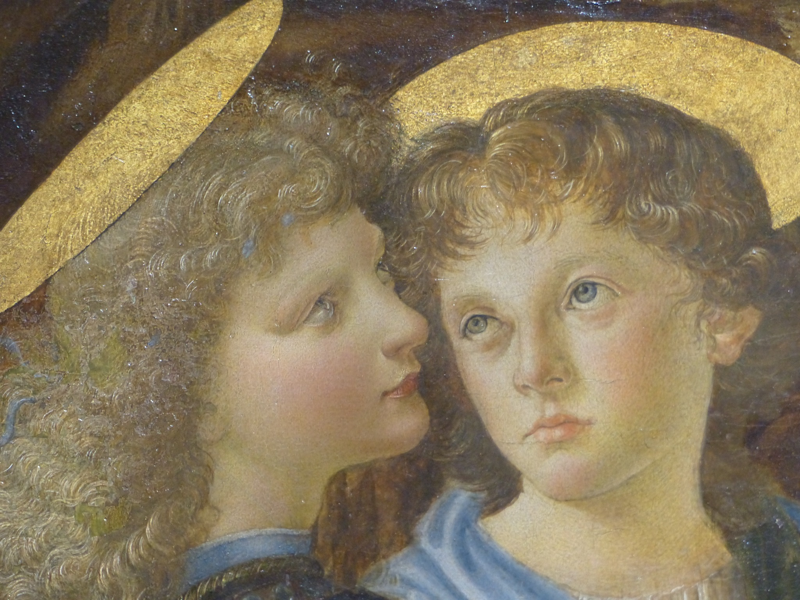

L'ange qui aurait fait abandonner la peinture à Verrocchio

Regardez les deux anges agenouillés à gauche du Baptême du Christ. Ils semblent appartenir à la même scène. Pourtant, l'un d'eux cache une histoire étonnante.
Selon Giorgio Vasari, Verrocchio aurait confié à un jeune apprenti le soin de peindre l'un des anges. Lorsque le maître aurait découvert le résultat, il aurait été si impressionné par la qualité de cette peinture qu'il aurait décidé de ne plus jamais toucher à un pinceau !
Mais qui était donc cet apprenti ?
Il s'agissait de Léonard de Vinci, alors en formation dans l'atelier florentin de Verrocchio.
L'ange de gauche, généralement attribué à Léonard, se distingue par la douceur de son visage, la souplesse de ses cheveux et les transitions subtiles entre lumière et ombre. Le jeune peintre aurait également contribué au paysage.
La réalité derrière la légende
Cette histoire nous vient des Vies des meilleurs peintres, sculpteurs et architectes de Vasari, publiées au XVIe siècle, plusieurs décennies après les faits. Rien ne prouve que Verrocchio ait réellement abandonné la peinture par dépit.
Ce qui est remarquable, en revanche, c'est qu'une même œuvre permet d'observer les débuts de celui qui deviendra l'un des artistes les plus célèbres de la Renaissance.
À retenir : derrière un ange discret se révèle un jeune Léonard de Vinci. Et derrière une anecdote savoureuse, une question fascinante : comment un élève finit-il par trouver sa propre manière de peindre ?